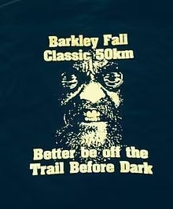

Partnerships
Durbin Race Management partners with experienced groups and runners such as the West Kentucky Runners Club, and So. IL Racing.
We even team-up with the notorious Lazarus Lake of the Barkley Marathon - the race that 'Eats it's young', for two of these events.
The Barkley Fall Classic
The Barkley Fall Classic, already a legend after four short years, is one of our favorite races. We love working with Laz to ensure everyone has a miserable time at this race. Morgan County's Coalfield High School football team provides the aid station help.
Strolling Jim
The Strolling Jim ™, founded in 1979, by Lazarus Lake when he was "merely" Gary Cantrell, is a true must do in the ultra world. One of a relative few true road ultras, it makes its way through the gorgeous Bedford County countryside. Durbin joined forces with laz in 2014, and SJ now includes a marathon, half marathon, and 10km, along with the iconic 40 miler. We partner with Gary and Sandra Cantrell and the Cascade High School Athletic Department.